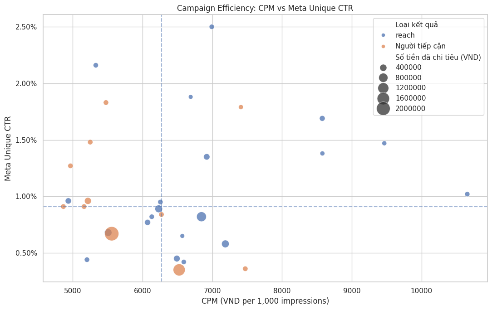
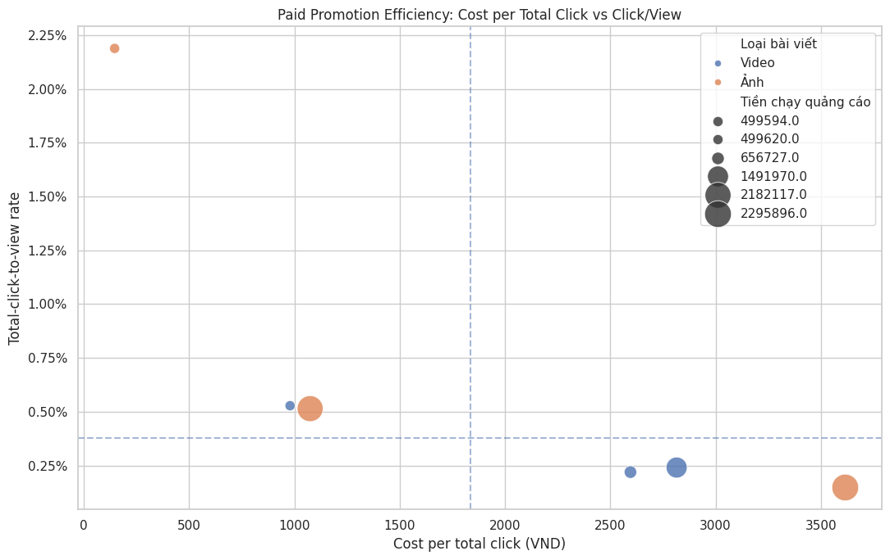
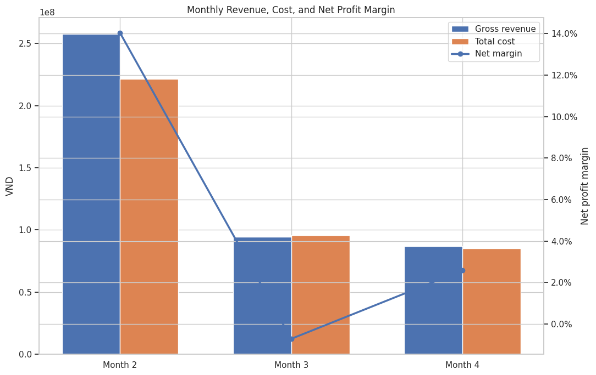
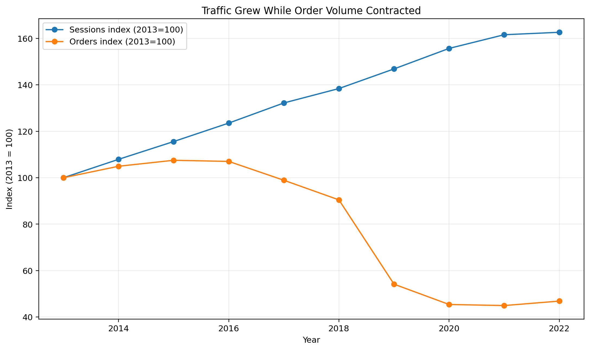
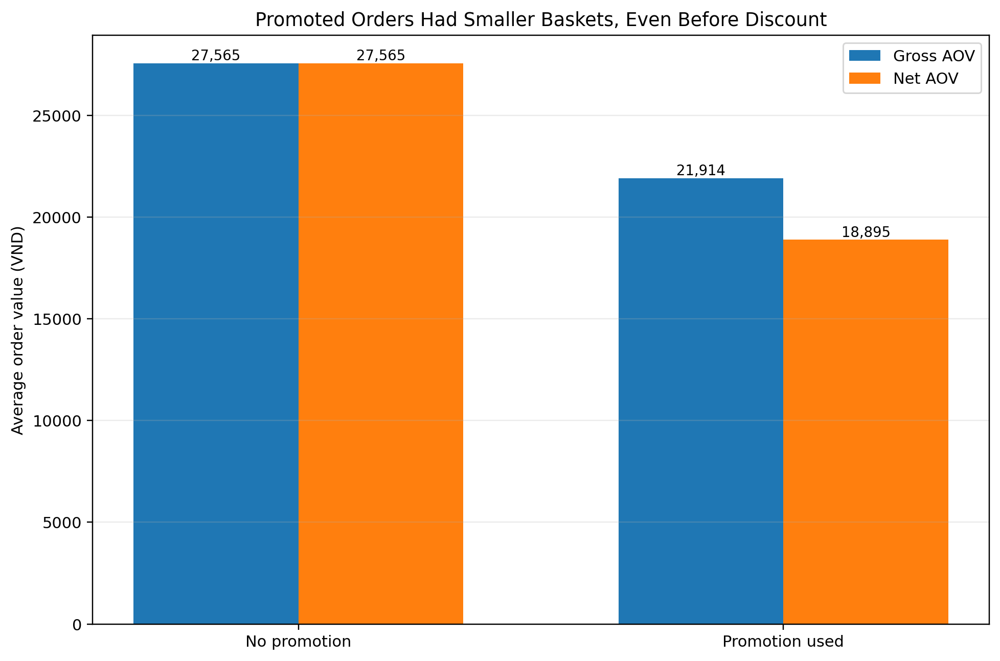
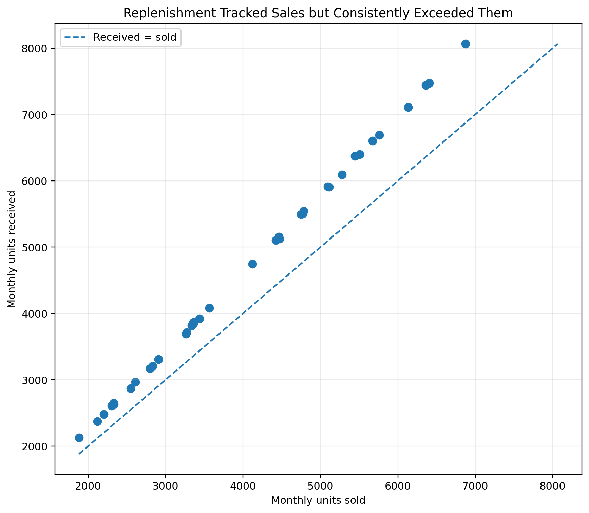
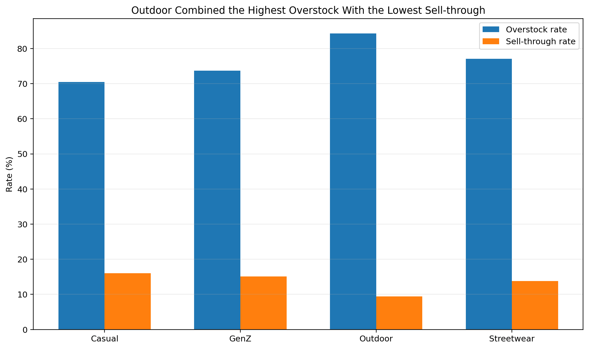

Data Analyst with a Data Science foundation and hands-on ownership across commercial performance,
e-commerce analysis, financial and inventory diagnostics, and operational data validation.
I use Python, SQL, and Excel to move from messy source data to validated KPIs, evidence, and recommendations.
My role: I owned the analysis end to end: source cleaning, metric definitions, QA, EDA, visualization, and interpretation across marketing, financial, and inventory data.
53ad campaigns
81Facebook posts
4.57%March revenue source mismatch detected
41.6% → 54.8%usage / revenue signal
Rebuilt campaign metrics from raw exports and separated Meta Unique CTR from self-calculated click-to-view rate; compared reach efficiency only within a common result type.
Validated revenue, cost, profit, and inventory flow instead of relying on stale saved outputs; kept conflicting source-table revenue values separate rather than silently reconciling them.
Observed ending-inventory / operational-revenue rising from 33.7% to 104.3% across Feb-Apr 2026 as a diagnostic signal requiring further investigation, not proof of overstock.

Campaign efficiency: CPM vs Meta Unique CTR.

Paid-promotion efficiency using cost per total click and click/view rate.

Revenue, total cost and net profit margin across the available months.
Analyzed a connected e-commerce dataset to diagnose commercial performance across traffic,
promotions, purchasing, and inventory, then translated the findings into business actions.
13connected tables
646,945orders
714,669order items
60,247inventory snapshots
Problem / context
Why was commercial performance weakening?
Separate acquisition, promotion, and inventory symptoms from the underlying data relationships.
My role
Business EDA + decision support
I owned grain-aware joins, KPI construction, conversion analysis, promotion/AOV analysis, inventory diagnostics, visualization, interpretation, and recommendations.
Team extension
Forecast review, not model ownership
A teammate implemented the final LightGBM/XGBoost forecast. I reviewed the output and connected it back to the business analysis.
1 · Validate grainOrders vs order items, product and inventory keys.
2 · Diagnose demandCompare traffic growth with order conversion.
3 · Test promotionsGross vs net basket value and quantity behavior.
4 · Inspect inventoryReplenishment, sell-through and overstock by category.
5 · RecommendTranslate findings into channel, promo and purchasing actions.
Reproduction result: rerunning the analysis changed several conclusions from the saved notebook.
The portfolio below uses raw-data reproductions rather than hard-coded dashboard outputs or metrics with mismatched grain.
Traffic Grew While Order Volume Contracted
Question: Did rising traffic actually translate into more transactions?
Portfolio

Annual sessions and orders are indexed to 2013 so both trends can be compared on one scale.
Key insight: sessions increased 62.7% from 2013 to 2022 while orders fell 53.1%; overall conversion moved from 1.13% to 0.33%.
Promotion AOV — Gross vs Net
Question: Were lower promoted baskets only an artifact of the discount?
Portfolio

Gross AOV is calculated before discount; net AOV is calculated after discount.
Key insight: promoted net AOV was 31.5% lower (18,895 vs 27,565 VND), and gross AOV was already smaller before discount.
Replenishment vs Sales — 2020–2022
Question: Was procurement disconnected from demand, or systematically too high?
Portfolio

The monthly relationship was recalculated directly from inventory snapshots.
Key insight: receipts tracked sales very closely (r = 0.9999) but averaged 14.7% above units sold, supporting systematic over-replenishment rather than demand-disconnected spikes.
Inventory Risk by Category — 2020–2022
Question: Which category showed the clearest combination of slow movement and excess stock?
Portfolio

Overstock and sell-through use the same 2020–2022 scope to avoid mixing time windows.
Key insight: Outdoor reached 84.3% overstock while sell-through was 9.43%, the lowest category in the same period.
Additional check: among promoted line items, discount depth and quantity were essentially unrelated
(Pearson r = −0.003). This does not prove promotions caused smaller baskets; it shows deeper discounts were not accompanied by larger line-item quantities in this dataset.
Business actions from the EDA
Conversion quality over traffic volumePrioritize downstream order conversion and customer quality, not traffic growth alone.
Promotion designPair discounts with bundles / cross-sell mechanics and monitor incremental order lift together with AOV.
Purchasing controlReduce systematic replenishment excess and evaluate purchase quantities against actual category sales.
Outdoor inventoryTighten category-specific safety stock and purchasing cadence; use clearance or cross-selling selectively.
Forecasting scope: the final team notebook used a 60/40 LightGBM–XGBoost blend with five-fold time-series cross-validation
to produce a 548-day forecast. Forecast implementation belonged to a teammate; my contribution was reviewing the output and linking it back to the EDA and recommendations.
Reconciled AI results against physical counts, standardized model-to-business SKU mappings, investigated discrepancies, and enforced a human validation gate before KiotViet writes.
Data pipeline & qualityDirect ownership of data work
ViMUNCH — From Raw Text to Quality-Controlled Benchmark
Built collection/preprocessing components, a Streamlit preprocessing tool, LLM-assisted pre-annotation, manual annotation and reviewer/scoring work; performed EDA and stratified dataset splitting.
8,501records
24structured fields
5,950 / 850 / 1,701train / dev / test
3,182 / 5,319metaphor / non-metaphor
Final seven-LLM experiments were implemented by my teammate; they are not presented as my individual implementation.
Built the inventory-inspection system end to end. For Data Analyst roles, the strongest evidence is reconciliation, mapping standardization, discrepancy analysis, validation checklists, and safe handoff into operational records.
Capabilities
Business analysis with engineering discipline.
Analysis
Python, SQL, Pandas, NumPy, EDA, KPI design, validation and reconciliation.
Excel & reporting
PivotTable, XLOOKUP, SUMIFS; KPI reporting and validation checks.